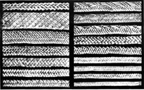
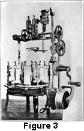

1922—Millinery
by Charlotte Rankin Aiken, B.A.
Chapter III—HAT STRAW AND STRAW BRAIDS (Continued)
Varieties
There are many varieties of straw braid and the number seems to be increasing every year. Some braids have been made by hand in the present weave for many centuries. Others are the product of machines.
Straw braids are classed as:
Hand-made
- Tuscan
- Leghorn
- Milan
- Patent Milan
- Japan Split
- China Split
- Liséré
- Swiss Straw
- Hemp
- Milan Hemp
- Imitation Hemp
Machine-made
- Chip
- Yedda
- Ramie
- Horsehair
- Horsehair Imitation
- Crêpe Band
- Pyroxylin
- Chrysanthemum Braid
- Specialties:
- Visca
- Caterpillar, etc.
Tuscan Braid
Tuscan plaits and Leghorn hats are made from Tuscan straw which varies greatly in quality and value. The Tuscan braid lends itself to fancy weaves with much grace, and pretty "lace Tuscan" hats are frequently seen.
The braid is used in wide fancy borders or in a hat apparently woven in one piece by hand. A strong twist of two straws may be made and used as a single strand. Several lace Tuscan hats in various colors were recently shown, resembling in pattern the Battenberg lace which was popular a number of years ago as "fancy work."
The Tuscan is a strong, durable braid, naturally of a rich cream color, tending to a tan yellow. The straw, which is very fine, is seldom split as other straws are, but is used whole. Other straws, such as the Panama type, which sometimes give this same effect, are split straws specially prepared. (See Chapter IV for information on Panama hats.)
The upper part of the stalk is yellow at first. In addition to the bleaching of the raw straw by the sun, several smokings with sulphur are given to the straw, the plait, and lastly to the hat to whiten it. The lower part of the straw which was covered by the slender leaf is not quite so yellow, but the darker part is known as the Tuscan.
Florence Tuscan Braid
A flat, narrow, plain braid known in the United States as Florence Tuscan is made of seven, eleven, thirteen, or even more straws. It is woven with quick jerks of the hand, and is either sewed together by hand at the edges or sewed by machine with the edges lapping over each other, the number of rows or laps to the inch indicating the fineness of the braid.
As Tuscan plaits tend to a yellow color in spite of the bleaching, it is very important for the weaver to choose straws of the same shade and blend the plaits carefully. The finest work on this straw braid, accordingly, tries the eyes severely, so that the plaiter can work at it only two or three hours a day. These very fine plaits, of course, are uncommon. Florence Tuscan is usually imported in plaits, and sewed into hats in this country.
Leghorn Hats
Leghorn hats, so called because they were exported from Leghorn, a port in Tuscany, were invented about 1840. There is a standard demand for these attractive and durable hats. They are naturally of a yellow or cream color. The close, strong weave and the quality of the straw give the hat strength and stiffness, yet allow it to bend slightly in a wind. This is an excellent feature in a shade hat, the common style of the Leghorn.
Leghorn hats are made in the region around Florence, usually of Tuscan straw, from braids known as "paglia," "florentina," or "nostrale." These braids are generally of thirteen strands but sometimes of five or of seven. Pedal Leghorn is an inferior grade. A very cheap, smooth, extremely coarse hat is called "Mountain Leghorn."
Plaiting Leghorn
Women and children may be seen on the streets of the Italian villages plaiting braid for these hats. After a few yards are made the braid is sewn together into the hat shape or made into placques and cones which are afterwards blocked into the shapes desired. A coarse, twisted cotton thread is used, which is not visible in the finished hat as the edges are fitted together so that the hat appears to be woven in one piece. In examining a Leghorn the places where the threads run can be detected by a slight ridge in the upper surface of the hat. The thread is pulled tight so that the edges of the braids interlock firmly. The little humps along the edges which fit so closely are called the "eyes" of the braid. On the under side of the Leghorn the regularity with which new straws were inserted in the braid may also be observed.
Milan Braid
Milan braid of good quality makes a beautiful and durable article which is usually popular as a spring hat in dark colors and as a summer hat in creamy white. The hat has an attractive gloss and while somewhat flexible has considerable stiffness. Handsome hats of Milan braid are sometimes made double with different colored brims sewn together. The hat is called Milan after the city of Italy near which most of these braids are produced.
Milan or pedal braid, as it is sometimes called, is made of seven strands, but a coarser braid of the same straw is five-end or five-strand Milan.
The straw used is coarse, although of excellent quality. It is called pedal straw, and is used in many fancy plaits besides in Milan braid. One authority says that the lower (and therefore coarser) part of the upper joint of the straw is the pedal straw, while the upper part is the Tuscan. Its treatment is similar to that of other straw.
The best Milan is hand-blocked and hand-sewed, but in the United States much of it is sewed on lock stitch power sewing-machines because this method is cheaper. The hats are sized when they are blocked.
Patent Milan
An imitation of a much coarser nature, called patent Milan, is grown and plaited in China. It is freely used in cheap hats. Even the coarsest Italian Milan is of a better grade than the finest quality made in China.
Split Straw
Split straw is the straw obtained by the splitting process already described. Two split straws are laid together, the bright sides out, and plaited in the usual way. English seven-end or "cord" is made in this way.
Many hats of "split Jap" braid are manufactured in Japan and many others are made up in the United States from imported braid. Much seven-end split braid is made in China where the straws are woven singly. In a hat of Chinese split straw the shiny and dull sides of the straw may easily be seen if they are closely examined.
Liséré
The word liséré is from a French word meaning binding, and this true straw braid is often called a binding braid. It is a very shiny, stiff, narrow braid, made generally from split straw, but sometimes from whole straw, and imported from Switzerland, Belgium, China, and Japan. A three-end liséré from Japan is used extensively.
Oriental Braids
Straw braid manufacture has developed rapidly in China in recent years, especially in the Province of Shantung in northern China, The chief port of trade is Tsing-tau. Wheat straw is used, but is less carefully prepared than in Italy. Barley and rice straw also are utilized.
The rice of Japan yields a stronger fiber than the rice grown in the United States, but it is not equal to wheat straw for hat-making purposes.
Braid-Making in China
Braid-making in China is done by the natives in their homes, under the direction of agents of large exporting houses. It is this labor that has discouraged the industry in other countries, for the people can live so cheaply that they can afford to work for little. Most of the plaiting is done in the interior of the country and must be taken overland for hundreds of miles to the seaports, where it is tied up into pieces, sorted, and baled, 240 pieces to the bale. One woman has to work at least two years to make enough plait for a bale, which can be bought in the United States after all transportation charges, middlemen, etc., are paid, at prices varying from $20 to $40 a bale. This makes the average wage a few cents a day. Much braid is sent to England for bleaching and manufacture and later reaches the United States. Luton is the center of the straw-bleaching industry in England.
Chinese Straw
Because the Chinese wheat is allowed to grow till it is fully ripe the straw is brittle, but nevertheless it is used for braiding. Two feet of stem between the joints in the middle of the stalk is cut into lengths. The resulting straws are four or five inches long. These are split into from two to seven pieces. They are moistened to make them pliable, and woven into braid one-eighth to one-half inch wide in odd lengths of from thirty to one hundred and twenty yards. The Chinese bleach this braid with sulphur fumes. They are clever in all imitations and are more skilful than any other nation in their methods of doing up braids and hats in packages.
The frontispiece shows several varieties of Chinese straw plaits.
Swiss Straw
The straw for Swiss braids is imported from Italy and most of it is made into men's hats. The best market for Swiss straw goods is France, where the braids are manufactured into hats.
Swiss Milan hemp and plain hemp are today as fine as any in quality. Also the best broad braids, known principally as silk straw, are manufactured there.
The industry is old. The peasants of the Canton of Aargau who carry it on have inherited their skill for generations. Before artificial silk and pyroxylin were invented, all fine silk straw braids came from Switzerland. This country finds the competition of Italy and Japan hard to meet and is able to hold its foreign trade in this line, not so much by the production of staple goods, as by specialties and fancy braids for women's hats.
Most of the best grades are made in the homes of the people, but the hand-work is limited to real straw; artificial or imitation braids are made in the factories.
Hemp
Hemp is not a true straw but like many other fibers it is classed as a straw braid. There are several varieties of hemp, and the plant that yields the fiber for hat-making must not be confused with the other and coarser sorts, such as the Sisal hemp, from which only ropes and cordage are made.
Manila hemp, a species of banana, from the finest fiber of which the most delicate laces, slippers, and other articles can be made, is the source of the material for hats; it is found growing naturally in only one place, the Philippines. Another name used in those islands for Manila hemp is "abaca." In the trade abaca braids are usually known as "tagal braids" or "tagals." These are the only hat braids exported in quantity from the Philippines. Most hats made by the islanders are made in one piece.
Hemp Hats
Hemp hats have been very popular and the probability that they will remain in favor is great, therefore it is well to consider them in detail. Some of the reasons for their popularity are:
- The ease with which the fiber dyes and retains the dye.
- The delicate colors obtained in dyeing.
- Strength and durability.
- Resistance to moisture.
- Light weight.
- Natural stiffness together with pliability.
- Attractive gloss.
Hemp-Weaving Industry
In the Philippines the industry of hemp-weaving existed before the occupation by Spain in the sixteenth century. In many regions the plant grew wild. The sides of hills of volcanic origin are well suited to its growth, and fertile, well-drained soil, damp air, and protection from too much sun and wind are necessary.
 Abaca is cut near to the roots before flowering (see Figure 2), the leaves
and stalks are split open lengthwise, and the strips obtained from them dried
in the shade for several days. The fiber is taken in strips from the petiole,
or stalk of the leaf of the plant. A large knife is used to separate pulp and
water from the strips, the strip being pulled between the knife blade and a
block of wood. It is important to remove all of the pulp, for if any remains
it darkens the fiber. The hard outer fiber is used for cordage and the inner
for hat braid. Two men can cut and scrape about twenty-five pounds of fiber
in a day.
Abaca is cut near to the roots before flowering (see Figure 2), the leaves
and stalks are split open lengthwise, and the strips obtained from them dried
in the shade for several days. The fiber is taken in strips from the petiole,
or stalk of the leaf of the plant. A large knife is used to separate pulp and
water from the strips, the strip being pulled between the knife blade and a
block of wood. It is important to remove all of the pulp, for if any remains
it darkens the fiber. The hard outer fiber is used for cordage and the inner
for hat braid. Two men can cut and scrape about twenty-five pounds of fiber
in a day.
The different grades of abaca are carefully sorted into five or six classes. Fibers of the same quality are tied together by the rapid fingers of the weaver in a long strand with firm, small knots. No tying machine can make so good a knot. If parts of the fiber are too fine, a piece may be doubled and tied. Tying becomes automatic so that an expert tyer can almost tie in the dark. The women's income from this work is often in addition to their agricultural work, so that their prosperity is great when compared, for example, with that of the Chinese. Hanks or skeins of Manila hemp are exported in this knotted form for manufacture into various articles.
Before Japan gained first place by inventing cheap machinery for braiding, Switzerland, France, and Italy imported knotted hemp in large quantities. The finest grades come from Italy. A great deal of fiber is sent loose from the Philippines to Japan to be manufactured; that is, sorted, tied, and woven into braid largely by machinery.
Philippine Factories
Several factories have been started in the Philippines. Machines make braids of various widths, though usually of thirteen strands with two or three fibers to a strand. (See Figure 3.) Since there is no import duty from the Philippines to the United States and the duty averages fifteen per cent elsewhere, the trade between the islands and the United States tends to increase.
In 1910 machinery for making braid was introduced, but most hats are still made by hand. The Bureau of Education is promoting this industry in the schools and in communities; and this helps the people greatly since it enables them to spend their time to greater advantage and at the same time earn more money.
Milan Hemp
A very popular braid is known as Milan hemp. This is simply a hemp braid in the Milan weave of seven ends. Large quantities of both Milan hemp and plain hemp braid are exported from Japan, Italy, and Switzerland, the latter producing the best. The dyeing is better in the Swiss straw; the Japanese are not able to obtain so clear a color.
Imitation Hemp
A German imitation of hemp is made of cotton tape. It is extremely cheap, but is too heavy for a comfortable straw hat and is not very satisfactory.
Machine-Made Braids
In 1840 looms were adapted to straw-weaving and for the first time braid was woven by machinery. Machine-made braids are rapidly increasing in number and seem destined to supplant hand-woven braids almost entirely. Factories in every country demonstrate this fact. There are a number of large concerns operating in the United States, and the varieties of machinery and materials used are endless. One large factory in Philadelphia employs almost every kind of machinery used in textile branches, weaving, spinning, braiding, knitting, embroidery, etc. It utilizes many kinds of materials, all kinds and sizes of cotton fiber—soft, glazed, and mercerized—various kinds of wool and mohair, silk of different grades, artificial silk, pyroxylin, tuscan cord, hemp, ramie, art luster, etc.
It is difficult to classify all braids as either hand- or machine-made, since so many straws and fibers are made up in both ways. The following is a description of some of the more important machine-made braids. Few of the fibers mentioned, however, are found in hand-made braids.
Chip
Chip braid is the only wood braid in general use. A large number of willow chip hats are made in northern Italy in the Modena province. The willows used there grow in the valley of the Po River. The Japanese have been making this braid, the chip straw from the trees of Japan being very white. White pine and Lombardy poplar, and also the English willow and English native poplar, are used to make white chip hats. In Switzerland wood-chip and silk are braided together. Chip is made in three-, five-, and seven-end braids.
The young tree is split into sections and planed smooth. Another special plane of knife blades is then drawn lengthwise down the boards, scoring long, fine, narrow cuts, but without removing any of the material. A smooth plane takes these fine strips off, and a thin chip straw results. Sometimes the wood is pounded and beaten in the process. For bleaching, the material is washed in acids and in alkalies.
The chip hat is light in weight, smooth, inexpensive, and has a soft, dull finish. Bending is apt to damage it, and in general it is more easily destroyed than some other hats. In recent years hemp has largely taken the place of the finest chip hats, so that only the cheaper grades are generally sold now. In the eighties chip hats were very fashionable for summer wear.
Yedda
Yedda braid was first produced in Italy, but the Japanese have made an imitation which, while inferior to the Italian article, is so much cheaper that the Japanese handle the greater part of the trade. Yedda is a tall grass grown in Italy, Japan, and the Philippines, and from its fiber a light, delicate hat, with a coarse, loose weave is made. Most yedda braid is woven by machinery, but some of the fancy yeddas are woven by hand.
Ramie
A number of braids, usually loose and coarse, are made from the fiber of the ramie, a kind of non-stinging nettle which somewhat resembles flax. The fiber is bleached, dyed, and woven by machinery. It is called "China grass" because it was originally woven in China, but now it is obtained from China, Japan, the Philippines, Egypt, the West and East Indies, and southern countries. The best is grown near the equator, in a hot, moist climate and rich, damp soil, as frost kills the roots. It is manufactured chiefly in Germany, France, England, Switzerland, and the United States.
Ramie fiber, which is obtained from the upright stem, is long, glossy, silky, and very strong; it is stronger than hemp, has more stiffness than flax, and is almost as glossy as silk. Beautiful, fine cloth has long been made from it, especially in China, but the process of separating the fibers from the stem is different when it is to be used for braid.
The fibers are removed from the stems by hand or by machinery. Either process is costly if done properly because of the difficulty of separating the fibers, and of getting rid of the gummy substance which holds them together. The degumming process consists of boiling the strips of ramie in diluted soda, then bleaching them with a powder, and washing them in diluted acid. The best part of the carded and combed fiber, called in the factory the "combed tops," about four feet in length, is drawn out by drawing frames into a fine sliver or cord, put through a bath to make the fibers adhere together, and then treated to preserve the gloss. After this the fibers are twisted or made into braid.
Ramie is very durable and is not affected by water or moisture. It could be grown in the southern part of the United States but the cost is too great to make the industry profitable. The ordinary nettle is sometimes used as a substitute for ramie.
Horsehair
Hair from the manes and tails of horses is made into braids in a number of countries, but perhaps the best are manufactured in Switzerland, largely by machinery. The best horsehair is obtained in South America. Horsehair also comes from Siberia, China, and Australia.
In one form this braid is stiff, light, glossy, and resembles open lace-work. It is used especially in dressy hats and in those made partly of other materials. It is also woven in a plain close style somewhat resembling hemp, but it may be easily distinguished by the sharp little ends of hair which are felt when the hand is passed over the hat
Pyroxylin
The popularity of horsehair braid led to its imitation in an artificial silk product, known as pyroxylin (see manuals for the "Silk Department" and the "Notion Department").
Pyroxylin has been manufactured successfully for only a few years and experiments are still being made for improving the fiber. When the process first began to be used the fiber melted if it became wet; even now it breaks easily when damp.
It is easy to tell the difference between this fiber and horsehair, for the imitation is not quite so stiff, nor so perfectly rounded as hair, which perhaps causes the slight difference in the gloss. Both are light and flexible, but pyroxylin is not so elastic when bent and released as the horsehair is. Another way of testing is to burn a small quantity of each braid. Burning hair has a characteristic odor, which pyroxylin does not have.
The artificial fiber can be made up into various forms, from an imitation of light horsehair braid to a heavy straw. Every large manufacturing country is paying some attention to this product.
Chrysanthemum Braid
One of the many novelty braids made of artificial silk is chrysanthemum braid. Strong cotton thread stitching holds in place the stiff, glossy silk fibers which somewhat resemble tiny chrysanthemum petals. It is soft, light, and attractive, but not especially durable.